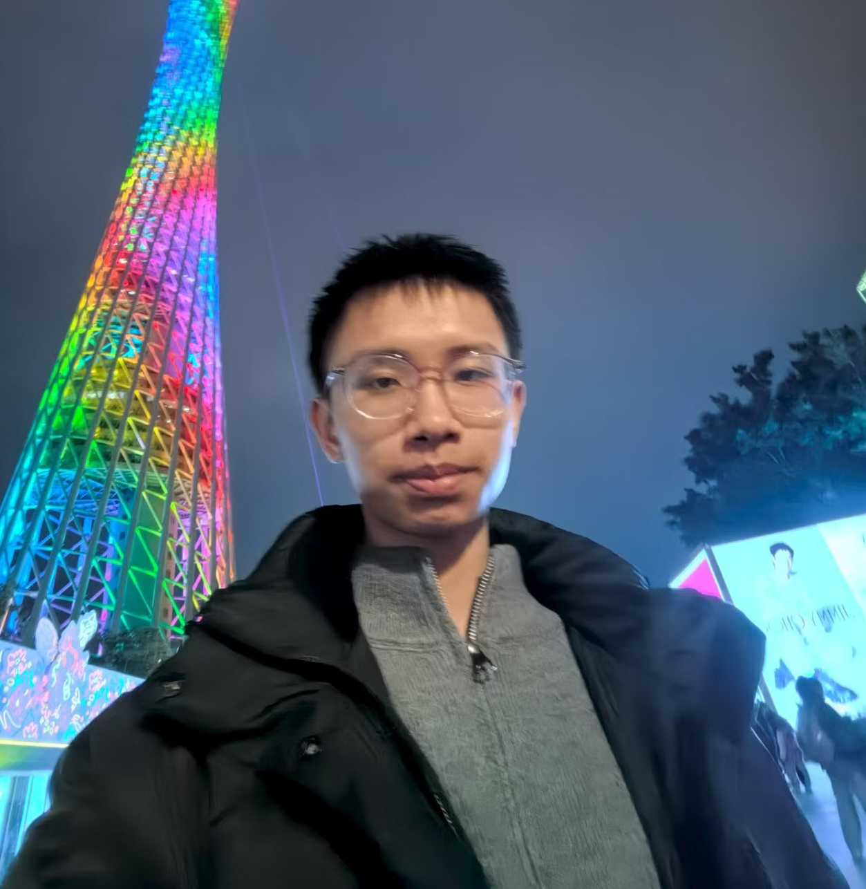

Lequan Yang
杨乐泉
Undergraduate Student in Network Engineering
School of Information Engineering, Gansu Minzu Normal University
I am an undergraduate student in Network Engineering at Gansu Minzu Normal University, graduating in 2027. My research interests lie in computer vision, multimodal learning, and LLM-based agents. I have led student teams to build LLM-powered multimodal systems, and I am currently working on unified vision transformers with geometric priors.
01 — Profile
About Me
I am an undergraduate student in the School of Information Engineering at Gansu Minzu Normal University, majoring in Network Engineering and expected to graduate in June 2027. My work sits between computer vision and multimodal learning: I am interested in how geometric structure can be injected into vision transformers, how diffusion models can be trained more stably, and how large language models can be grounded in embodied devices.
I enjoy leading small teams and turning research ideas into working systems. I led a seven-person team to build a multimodal emotion model for psychological counseling scenarios, and led the design of an end-to-end LLM agent deployed on a robot car. Outside of research, I take part in data mining and innovation competitions, and I like writing code that is fast enough to run on real hardware.
2023.08 — 2027.06 (expected)
Gansu Minzu Normal University
B.Eng. in Network Engineering, School of Information Engineering
GPA 3.0/4.0 — top 10% of the major
02 — Research
Research Experience
Currently under review.
-
Unified Multi-Task Vision Transformer: Zero-Shot Adaptation with Geometric Priors
2025.06 — PresentNeurIPS 2026 Under Review
- Proposes a framework spanning visual perception, generation, and world modeling, addressing inconsistent cross-task and cross-time representations in existing systems.
- Designs spatio-temporal geometry-aligned tokenization that builds geometry-consistent video tokens from 4D cues including depth, surface normals, and motion.
- Develops geometry-conditioned attention that injects geometric structure into the attention computation, enabling task-adaptive and consistent feature aggregation, and extending to diffusion generation and persistent world modeling.
- Designs a task prompt encoder that supports natural-language-driven open-vocabulary generalization.
03 — Honors
Competitions & Awards
-
“Challenge Cup” Extracurricular Academic & Technological Works Competition
Grand Prize · Provincial Team lead
-
Chinese Collegiate Computing Competition
Second Prize · Provincial Team lead
-
Gansu Provincial Data Mining Challenge
Second Prize · Provincial
-
China International College Students’ Innovation Competition
Third Prize · Provincial
-
Huang Yanpei Vocational Education Innovation & Entrepreneurship Competition
Third Prize · Provincial
04 — Skills
Technical Skills
CV / LLM Foundations
PyTorch and Transformer architectures; principles and training pipelines of mainstream vision backbones including ViT and Swin; efficient fine-tuning with LoRA and PEFT.
Multi-Task Learning
Unified architecture design, task prompt encoding, zero-shot task adaptation, and parameter-efficient transfer with shared representation learning.
Engineering & Optimization
Custom operators, on-device deployment, and memory-efficient training at scale.
Languages
Comfortable reading and writing technical English for research papers.
05 — Contact
Get in Touch
I am happy to discuss research collaborations, internship opportunities, or anything related to computer vision and multimodal learning. Email is the fastest way to reach me.